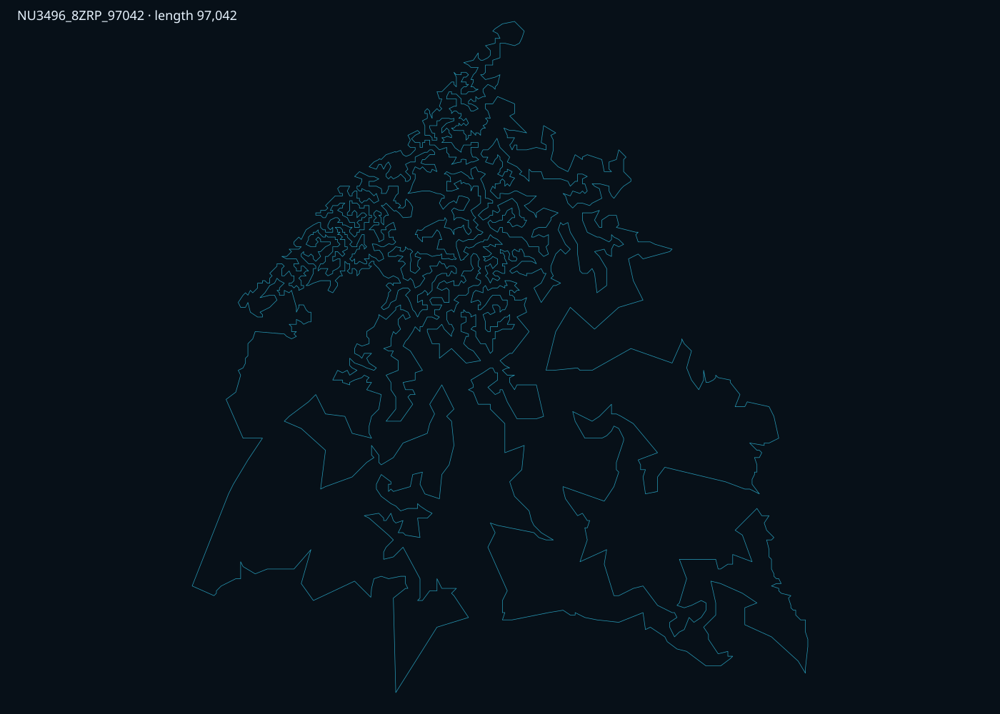

8Z Research Program · AIM³ Institute · DEV2.3 Continuous Research · Live Verified Checkpoint
Nicaragua · 3,496 real locations
The open-ended DEV2.3 campaign has produced another independently verified live checkpoint: 97,042 — 0.946615% above the certified optimum.
The active P2 branch began from the completed 97,050 DEV2.3 winner and improved it by 8 tour units after about 12 h 56 min. The complete 3,496-city cycle was atomically checkpointed and independently recomputed from the original nu3496.tsp coordinates. Only 8 undirected edges changed; their total cost fell from 298 to 290. The 16-hour variant is still running, and the continuous campaign will proceed to further evidence-led branches.
After branch P1 completed at 97,050, cycle 1 continued into branch P2 from that new incumbent. The active configuration remains LZ_binary + ratchet with candidate width k=10 and improve-only acceptance, but deliberately uses the simpler MDL-friendly base operator family 2opt, oropt1/2/3, double_bridge. CuPy/GPU and the Rust backend are active with one worker.
Because the variant was still active at publication time, the completed-run leaderboard lagged behind the live record. The public route artefacts below were independently recomputed from the original nu3496.tsp instance and contain the complete legal tour, verification report and interactive visualization.

Live-record status: 97,042 is a complete, independently verified tour saved during active branch P2. The branch has not yet emitted its final DONE row and may improve again before its 16-hour budget ends.
| Checkpoint | Method / status | Length | Gap | Change |
|---|---|---|---|---|
| DEV2.3 live record | P2 · LZ_binary + ratchet + k10 + base operators | 97,042 | 0.946615% | −8 vs P1 |
| DEV2.3 completed P1 | LZ_binary + ratchet + k10 + ext operators | 97,050 | 0.954937% | completed 16-hour branch |
| DEV2.1 completed winner | focused B1920 F1 | 97,056 | 0.961178% | published completed checkpoint |
| Elite-fusion seed | edge fusion + deterministic Or-opt-1 | 97,110 | 1.017351% | pre-sub-1 seed |
The DEV2.1 focused surgery arena first rebuilt the independently verified 97,110 elite-fusion seed. It then launched the first evidence-led B1920 continuation: SUB1_FOCUSED_B1920_F1_fusion_ratch_ext_k10. The winning recipe was LZ_binary sensing, the ratchet law, candidate width k=10, and the operator set 2opt, oropt1/2/3, double_bridge, 3opt_type4, seg_flip. CuPy/GPU and the Rust 2-opt backend were active with one worker. The route improved by 54 units, from 97,110 to 97,056.
The best point was reached after 33,215.69 seconds (about 9 h 13 min), at move 31,410 of 52,310 total moves. The variant completed its full 16-hour budget, after which the master detected 97,056 ≤ 97,093 and intentionally stopped before the remaining three variants. This is therefore a raw arena result, not a post-run reconstruction.
Milestone behavior: the master stopped immediately after the first completed focused variant crossed the sub-1% threshold. The other three planned variants were intentionally not run, so 97,056 is a verified milestone — not evidence that this focused family is exhausted.
| Milestone | Method / variant | Length | Gap | Role |
|---|---|---|---|---|
| Sub-1 focused winner | LZ_binary + ratchet + k10 + ext operators | 97,056 | 0.961178% | previous completed raw arena record |
| Focused seed | elite edge-component fusion + deterministic Or-opt-1 | 97,110 | 1.017351% | starting seed for DEV2.1 surgery |
| B1920 broad-door winner | ratch_ext from B960 best | 97,153 | 1.062081% | best before fusion/surgery |
| B960 winner | DOOR_ratch_ext_from_best | 97,202 | 1.113053% | deep door continuation |
| B480 winner | ratch_ext2 + 3opt4/5 + seg_flip | 97,337 | 1.253485% | major poly-door breakthrough |
| B240 door | PS3_BB_ext | 98,940 | 2.920984% | first sub-3% opening |
For a Travelling Salesman Problem with n cities, the number of distinct possible routes is (n−1)! ÷ 2. For n = 3,496 that is (3,495)! ÷ 2. Here is what that number actually looks like — all 10,869 digits of it:
Brute force at 10¹² routes/sec
The observable universe is ~14 billion years old. You would need that many more universes of time just to begin to sample the space.
Atoms in the universe
Our search space is larger by a factor whose exponent has over 10,000 digits. There is no physical analogy adequate to close this gap.
What we actually do
We never look at most routes. Smart moves + adaptive DCC governance follow improvement gradients, escaping local optima without random thrashing.
Current live verified sub-1% checkpoint
Out of a 10,869-digit search space, the verified route lands only 910 units above the certified optimum. On a laptop-scale local stack, with a small Python core, optional Rust acceleration, and evidence files published beside this page.
Every optimization move in our solver was invented before 1980 — most before personal computers existed. We use no machine learning, no proprietary techniques, no black boxes. Pure classical combinatorial mathematics, directed by one new idea: the DCC governor.
The Travelling Salesman Problem is stated rigorously. No efficient algorithm is known. It will eventually become the defining NP-hard benchmark — the problem against which all solvers are judged. It remains unsolved in the general case to this day.
Build a tour by repeatedly visiting the closest unvisited city. Simple, fast, not optimal — but a strong starting point. This is our initialization strategy, and it beats every space-filling curve we tested on nu3496 (greedy: 103,064 after 2-opt vs hilbert best: 107,262).
Remove two edges from the tour, reconnect in the only other possible way. If shorter, keep it. Repeat until no improvement. Invented 67 years ago. Still the most effective local search primitive in practice. Our Rust-accelerated 2-opt inner loop runs ~100× faster — but the algorithm is bit-for-bit identical to Croes's original.
The theoretical framework for sequential k-opt moves. Published by Shen Lin and Brian Kernighan. Established the intellectual foundation for all modern TSP local search. Still cited in every serious TSP paper written today.
Relocate a chain of 1, 2, or 3 consecutive cities to a better position elsewhere in the tour. Finer-grained than 2-opt — makes surgical improvements where 2-opt cannot. In our nu3496 runs, or-opt-1 and or-opt-3 produce more wins than double-bridge by a wide margin. Published 49 years ago. Decisive in 2025.
One of the new orchestration layers we developed. An adaptive governor that decides which classical move to apply, when to escalate intensity, and how to escape stagnation without collapsing. The underlying moves are 50–70 years old. The DCC orchestrates them intelligently at scale, while the broader research program adds compression sensors, polyhedral/folded representations, targeted continuation and Rank-Don’t-Eliminate resurrection.
We took algorithms invented between 1954 and 1976, added a new adaptive governor inspired by neuroscience, wrapped the whole thing in ~100 KB of Python with zero external dependencies, and achieved results on a 3,496-city instance that would have required a supercomputer and months of runtime in the 1990s — if it had been attempted at all. The math is older than most personal computers. The results are state-of-the-art for our hardware class.
The gold standard for TSP is Concorde — a solver built over decades by world-class research teams at Princeton, Waterloo, and Rice. Here is what separates us:
Concorde proves optimality — but needs an entire mathematical edifice to do it. We don't prove optimality. We show something different: that a lightweight adaptive system, built from mathematical primitives invented before the moon landing, can navigate a 10,869-digit search space and produce a verified live checkpoint within 0.946615% of optimal. The efficiency of navigation is the empirical signal. How does a small system find good solutions so reliably in a space this large? That question is the research.
Before 1990
In the 1980s, solving a 3,496-city TSP instance to within 2% of optimal was not a research goal — it was outside the conceptual horizon. The computational theory for large-scale heuristic TSP didn't exist. Available hardware was millions of times slower than a modern laptop.
1990s — with supercomputers
Early 1990s supercomputers ran at megahertz clock speeds. Instances above n=1,000 were considered "large." Researchers published papers celebrating solutions for n=500. A 3,496-city instance with a sub-2% gap bound was years away even for the best-funded teams in the world.
Today — consumer hardware
A consumer workstation, Python available for free, optional Rust/CuPy acceleration, and a compact locally reproducible workflow. The route, hash, verification report and interactive map are published with this page.
"The 50 hours are not a measure of slowness. They are a measure of the problem's true depth — and our ability to navigate it with almost nothing."
Concorde — the most powerful TSP solver ever built, backed by decades of research and requiring commercial LP solver licenses — needed over 136 CPU-years to prove the optimal solution for the 85,900-city pla85900 instance (2006). That is the best team in the world, unlimited compute, decades of work. We are not Concorde. We are not trying to be. We are a 100 KB Python file finding near-optimal solutions to a 3,496-city instance in 50 hours on a single laptop. This comparison is not embarrassing. It is extraordinary.
Third checkpoint. t≈61h (March 18 08:50 → March 20 22:03). Fleet of 14 workers, all active. Meta-DCC: 1,030 snapshots, 34 meta-steps. Fleet convergence reached — all workers within 0.022% of each other. Tightest spread since the run began.
| Worker | Gap bar | Gap % | Best tour | Status |
|---|
All 14 workers converged to within 0.022% (21 tour units) of each other — the tightest spread since the run began. Previous spread at t=50.6h was >1.2%. The fleet has found a shared local basin. DCC v2 self-healing and Meta-DCC fleet monitoring both contributed.
t≈50.6h: W5 at 1.620% (previous leader).
t≈61h: W13 at 1.241% — improvement of 0.379% in ~10h. W13 was not even in top-3 at t=50.6h. A new worker emerged as leader through sustained DCC-governed search.
The fleet has found a shared local basin. Further improvement to t=168h likely reaches ~1.10–1.15%. Sub-1% is unlikely without:
Hardware — consumer laptop
16 CPU cores (14 in use for workers). Consumer RTX GPU. Windows 11. Standard off-the-shelf hardware. Nothing purpose-built, nothing rented from a cloud provider.
The Rust acceleration
The 2-opt inner loop is accelerated via a small Rust extension (~200 lines, PyO3/maturin). ~100× speedup for that one loop. The algorithm itself — the logic, the moves, the math — is identical to Croes 1958. We added speed. The intelligence remains in the DCC.